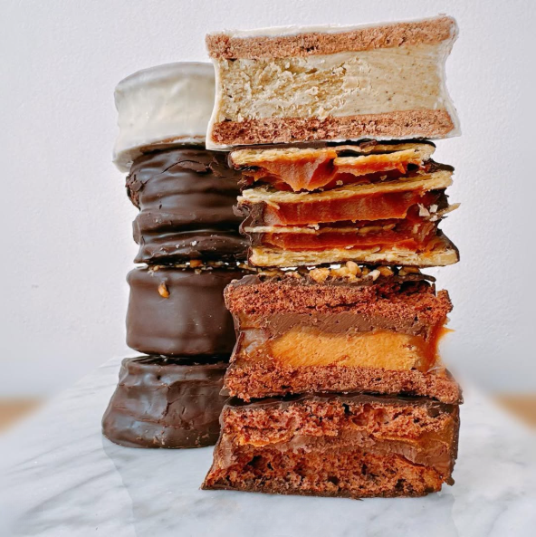
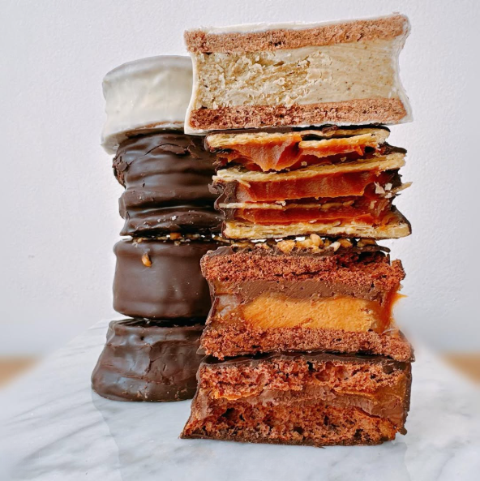

"Desde que descubrí Dulce Tradición, no he podido dejar de volver. Los alfajores son simplemente espectaculares. Mis favoritos son los de choccolate´s, aunque cada sabor que pruebo parece superar al anterior. La atención al detalle en cada pieza es evidente, y el servicio es siempre amable y atento. Además, la ambientación del local es perfecta para disfrutar de un café acompañado de estos deliciosos alfajores. ¡Recomendado al 100%!”


 
